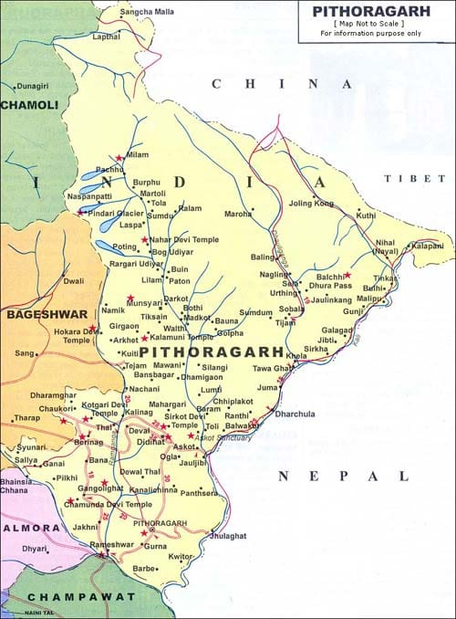

Organic Madua – Pithoragarh

🌾 Product Description
Organic Madua, also known as Finger Millet or Ragi, is a highly nutritious and traditional grain widely cultivated in Pithoragarh. Rich in calcium, iron, dietary fiber, and amino acids, it is a gluten-free superfood ideal for people with dietary restrictions. In the hilly terrain of Pithoragarh, farmers have cultivated Madua organically for generations, using no chemical fertilizers or pesticides. Its natural resistance to drought and pests makes it a sustainable and environment-friendly crop. Madua is ground into flour and used to make rotis, porridge, and sweets.
📍 Origin, Speciality & Cultural Significance
Madua has been a staple in the Kumaoni diet for centuries and holds cultural significance in local festivals and religious offerings. Its high-altitude cultivation in the clean environment of Pithoragarh enhances its nutritional value and purity. Traditionally, Madua flour is used to prepare thick chapatis that provide warmth and strength in the cold climate. The crop requires minimal water and is ideal for rain-fed agriculture, helping maintain soil fertility and livelihood of marginal farmers.
📞 Contact & Purchase Info
To purchase authentic Organic Madua from Pithoragarh, contact Pithoragarh Agro Market at email madua@organicpithor.com. Visit their online store at https://hoionline.in/product/organic-mandua-aata/ or explore the local markets in Dharchula and Didihat for fresh milled Madua flour.
🗺️ Pithoragarh District Map

🎉 Fun Facts & History
- Madua is believed to have originated over 5,000 years ago and was a key crop of ancient Himalayan civilizations.
- It is often called the "Bone Strengthening Grain" due to its high calcium content.
- Locals believe eating Madua roti helps in fighting cold weather and increasing stamina.
- It is also used in preparing traditional Kumaoni dishes like Madua Halwa and Madua Laddoo.